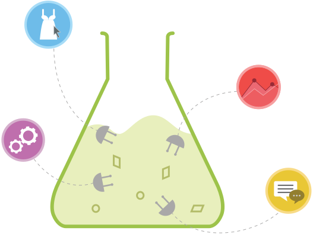

How do recommender systems work?
A simple introduction
Yanir Seroussi
yanirseroussi.com | @yanirseroussi | linkedin.com/in/yanirseroussi
Note: I also published a more thorough article on recommender systems.
No magic
GIGO: Any data-driven system can only be as good as the data it's fed
Fancy mathematical models often try to emulate simple intuition
Classic scenario
Question: Given a person, what movies would they like?
Answer: depends on the data
No data
We know nothing about movies and nothing about the person
Best guess: random movies
Partial rating* data
We know what others rated, but nothing about the person
Best guess: popular movies
Richer rating data
We have ratings by the person and by other people
Collaborative filtering
Find people with similar taste to the person and recommend based on their taste
Find movies that are rated similarly to the movies liked by the person
Richer rating data + movie metadata
Content-based recommendation: find similar movies to liked movies based on genre, cast, etc.
Can be combined with collaborative filtering
And beyond...
Social data
Context
Temporal data
Price

Other considerations
Diversity of recommendation list
Serendipity versus trust in the system
Short-term gains versus lifetime value
Relevance to the user versus revenue
User interface and experience
Bottom line: build-measure-learn